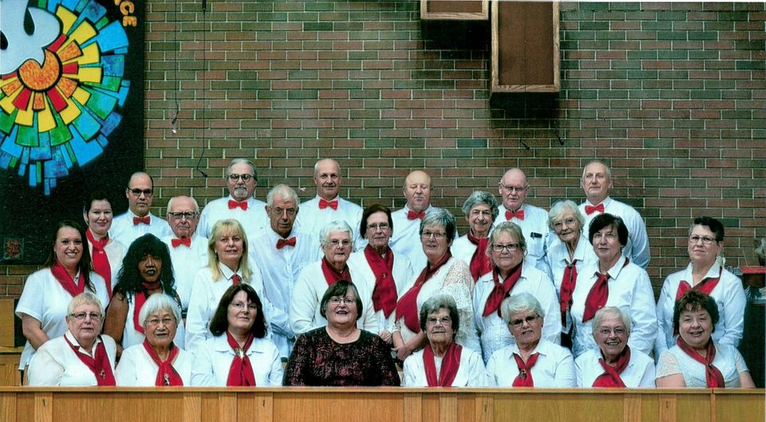

Chatham-Kent Singers
CK Singers is a four part harmony choir based on Chatham-Kent, Ontario. We are a non-profit community choir that performs a variety of different
music to help worthwhile charities and community organizations.
Last year we raised approx. $800 for the Chatham Hospice and almost $1,000 for Outreach for Hunger.Charitable organizations such as Rotary, Kinsmen, Teacher’s Association etc.
have also enjoyed our choir.
It was formerly known as the Kent Glee Club and was established in the 1950’s under the direction of Sam Burton.
Our current director is Nancy Tapley and pianist is Joy Anderson.
We meet from September - May on Tuesday nights from 7 -9pm at First Presbyterian Church (60 5th St, Chatham, ON). Come out and join us we are always looking for new members!
Choir members each pay $20 per season to cover the cost of insurance for our choir.
Updates
The first rehearsal of the 2025/26 seasons is at 7pm at on Tuesday September 9th, 2025 at First Presbyterian Church in Chatham Ontario.